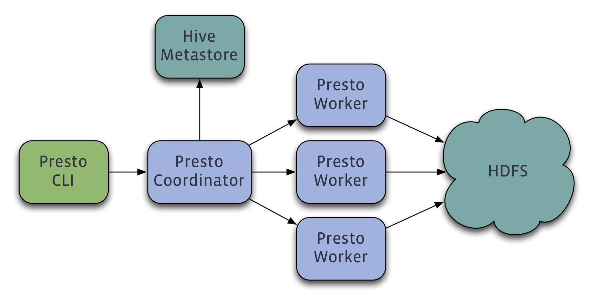

presto
homepage上没有关于presto内部实现的材料, 只有一个简单架构图.
整体架构和Hive是类似的. 猜想底层执行引擎也就是presto-worker从MapReduce换成了PDBMS, 然后应该也针对HDFS上的数据做了索引或者是存储格式改进比如orcfile, parquet, etc.
看上去这个系统挺朴实的, 直接使用HDFS以及Hive-metastore这些已有组件, 估计presto-coordinator也复用了部分Hive的代码. 应该只是在presto-worker上做了很多改进和优化.
